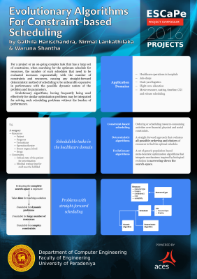
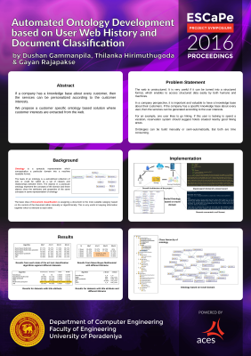
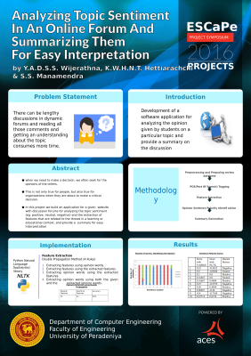
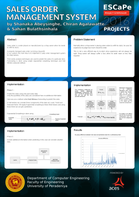
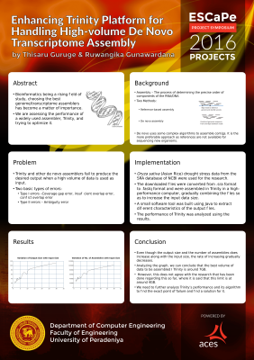
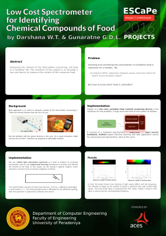
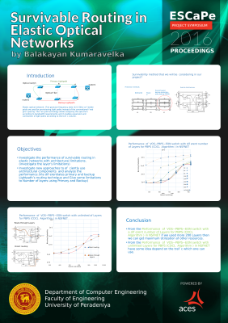
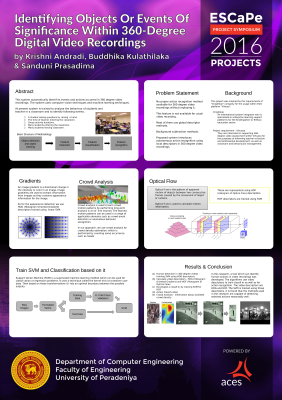
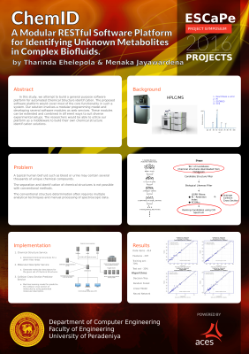
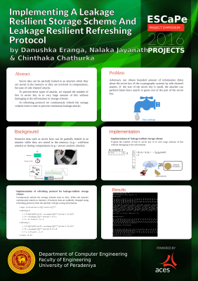

Evolutionary Algorithms for Constraint-based Scheduling

Automated Ontology Development Based on User Web History and Document Classification

Analyzing Topic Sentiment in an Online Forun and Summarizing Them for Easy Interpretation

Sales Order Management System

Enhancing Trinity Platform for Handling High-volume De Novo Transcriptome Assembly

Low Cost Spectometer for Identifying Chemical Compounds of Food

Survivable Routing in Elastic Optical Networks

Identifying Objects or Events of Significance within 360-Degree Digital Video Recordings

ChemID - A Modular RESTful Software Platform for Identifying Unknown Metabolites in Complex BiofluidsImplementing a Client-Server Setting to Prevent the Browser Reconnaissance and Exfiltration viw Adaptive Compression of Hypertext Attacks

Implementing a Leakage Resilient Storage Scheme and Leakage Resilient Refreshing Protocol
Third Engineering Students' Conference at Peradeniya
{kind=link}
{kind=link}
{kind=link}
{kind=link}
{kind=link}
{kind=link}
{kind=link}
{kind=link}
{kind=link}
{kind=link}